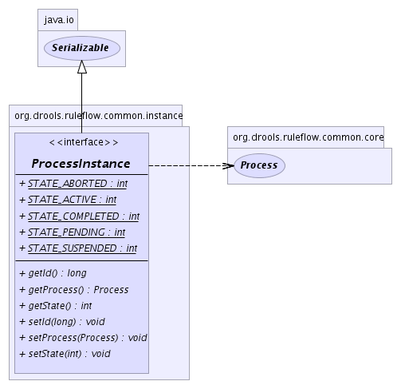

org.drools.ruleflow.common.instance
Interface ProcessInstance
- All Superinterfaces:
- java.io.Serializable
- All Known Subinterfaces:
- RuleFlowProcessInstance
- All Known Implementing Classes:
- ProcessInstanceImpl, RuleFlowProcessInstanceImpl
public interface ProcessInstance
- extends java.io.Serializable
A process instance is the representation of a process during its execution.
It contains all the runtime status information about the running process.
A process can have multiple instances.
-
- 
STATE_PENDING
static final int STATE_PENDING
- See Also:
- Constant Field Values
STATE_ACTIVE
static final int STATE_ACTIVE
- See Also:
- Constant Field Values
STATE_COMPLETED
static final int STATE_COMPLETED
- See Also:
- Constant Field Values
STATE_ABORTED
static final int STATE_ABORTED
- See Also:
- Constant Field Values
STATE_SUSPENDED
static final int STATE_SUSPENDED
- See Also:
- Constant Field Values
setId
void setId(long id)
getId
long getId()
setProcess
void setProcess(Process process)
getProcess
Process getProcess()
setState
void setState(int state)
getState
int getState()